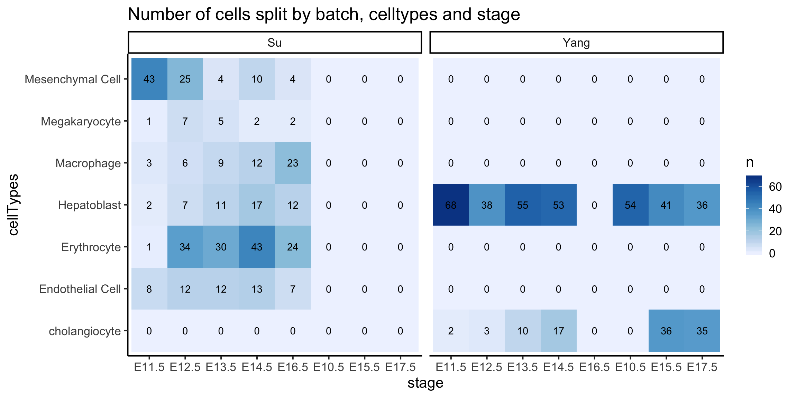
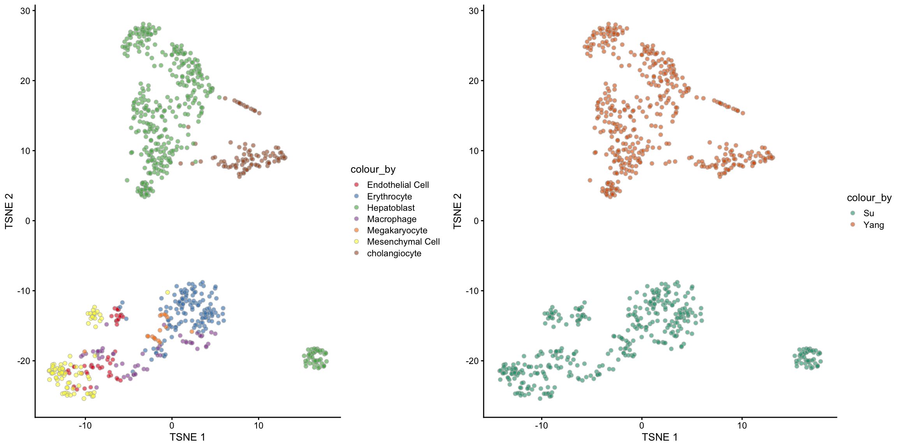
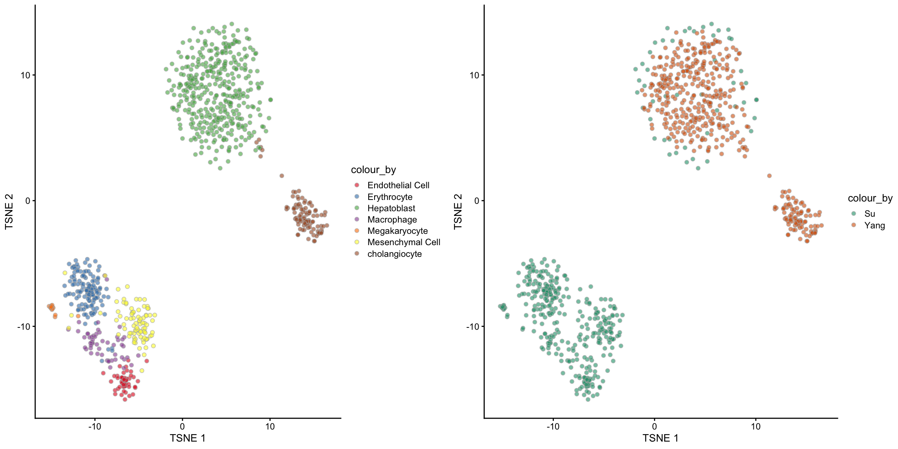
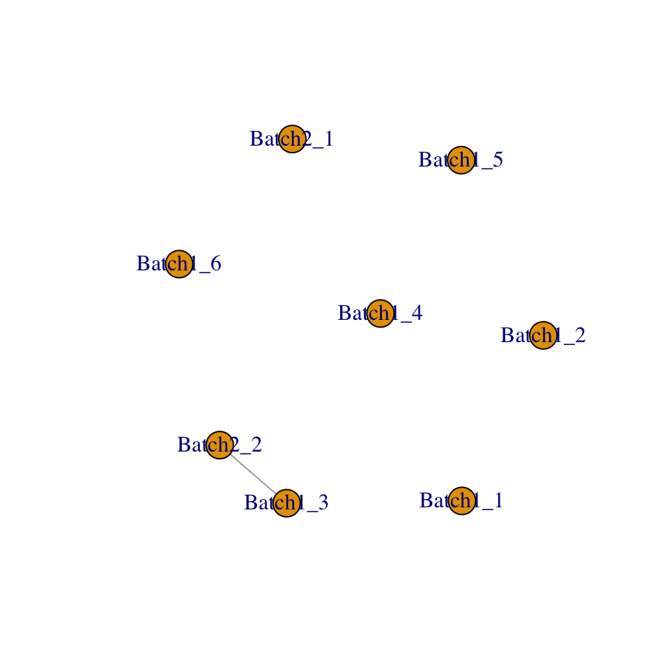
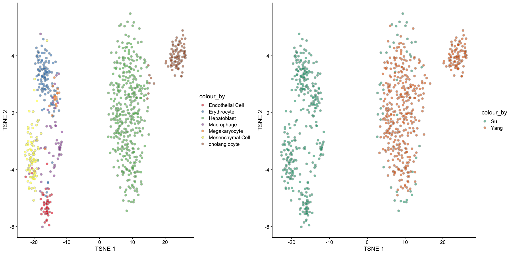
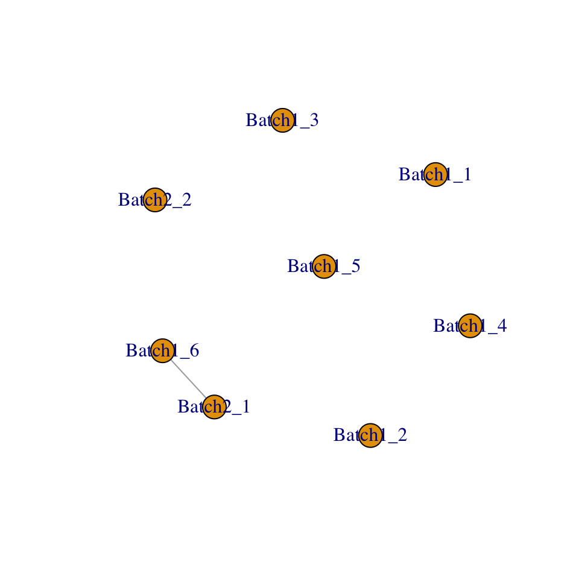
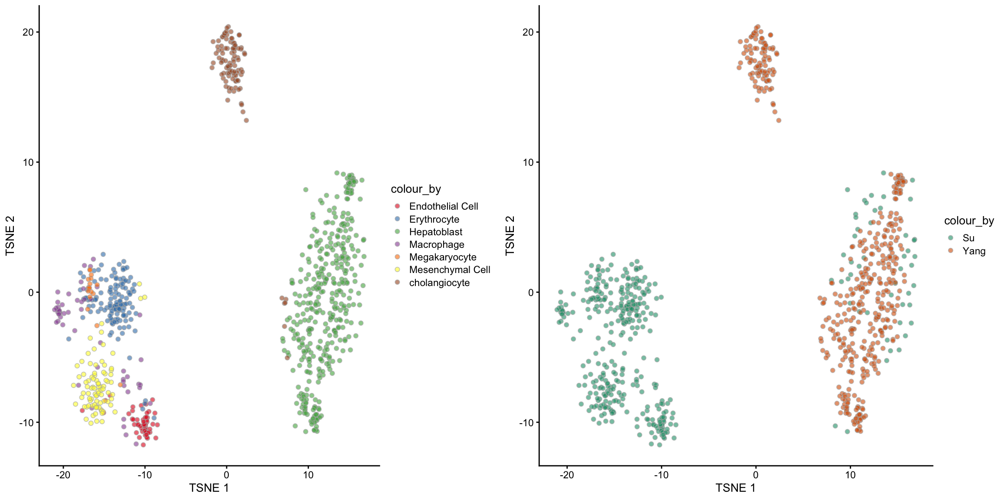
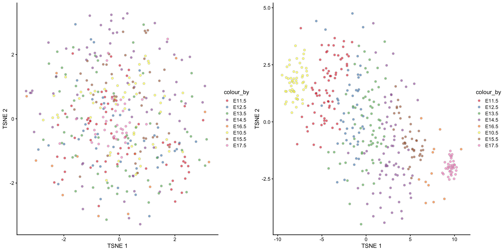

scMerge is a method developed by the Sydney Precision Bioinformatics Group. It aims to merge multiple scRNA-Seq data so that researchers can look for biological signals on data pooled from multiple data sources. The key to achieving a good merge is to remove the noise created by pooling data from multiple sources.
There are two key steps in scMerge:
The ultimate result is a well-merged data where the cells are separated out by the biology but not the noise due to data sources.
library(scMerge)
library(scater)
library(dplyr)
library(ggpubr)
library(forcats)
library(dplyr)
library(tidyr)
theme_set(theme_classic(16))We will begin with merging two mouse liver datasets.
This is perhaps a good place to clarify the terminology data sources and batch. In traditional transcriptomics analysis, the word batch means a large set of samples are processed by different technicians or sequenced on different dates etc. Our scMerge methodology not only corrects for the data noise created by this type of batches, but it can also correct for noises of unspecified origins e.g. noises created from multiple experiments with different biological questions in mind or noises from different protocols (see the table below). Hence, even though we may use these two terms interchangably, it is important to clarify that we are actually performing a more difficult task of merging from two different sources of data rather than simply correcting for batch effect within a single experiment.
| Name | ID | Author | DOI or URL | Protocol | Organism | Tissue | # of cell types | # of cells | # of batches |
|---|---|---|---|---|---|---|---|---|---|
| Liver | GSE87795 | Su | 10.1186/s12864-017-4342-x | SMARTer/C1 | Mouse | Liver | 6 | 389 | 6 |
| GSE90047 | Yang | 10.1002/hep.29353 | Smart-Seq2 | 2 | 448 | 2 |
For the purpose of efficient data management, the bioinformatics community uses a SingleCellExperiment object to store single cell data. We have saved the Su and Yang data as two separate RDS files and we will read these data in first.
Note: In the scMerge publication, we have merged four mouse liver datasets together. This data is a bit too large for us to work with in this workshop, hence, we will only merge the Su and Yang datasets.
datapath = "./data/"
# datapath = "/home/data/"
su = readRDS(paste0(datapath, "sce_GSE87795.rds"))
yang = readRDS(paste0(datapath,"sce_GSE90047.rds"))The scMerge package has a convenient function that combines multiple SingleCellExperiment objects into a single SingleCellExperiment object. We will first put the Su and Yang data into a list and then run the sce_cbind function from scMerge.
sce_list = list(
su = su,
yang = yang
)
sce_list## $su
## class: SingleCellExperiment
## dim: 23355 389
## metadata(1): log.exprs.offset
## assays(3): counts log2cpm logcounts
## rownames(23355): ENSMUSG00000104017 ENSMUSG00000102331 ...
## ERCC-00170 ERCC-00171
## rowData names(9): is_feature_control is_feature_control_ERCC ...
## total_counts log10_total_counts
## colnames(389): E11.5_C07 E11.5_C44 ... E16.5_2_C63 E16.5_2_C89
## colData names(33): batch stage ... pct_counts_top_50_features_ERCC
## is_cell_control
## reducedDimNames(0):
## spikeNames(1): ERCC
## altExpNames(0):
##
## $yang
## class: SingleCellExperiment
## dim: 17215 448
## metadata(1): log.exprs.offset
## assays(3): counts log2cpm logcounts
## rownames(17215): ENSMUSG00000000001 ENSMUSG00000000028 ...
## ERCC-00170 ERCC-00171
## rowData names(9): is_feature_control is_feature_control_ERCC ...
## total_counts log10_total_counts
## colnames(448): E10.5D_1_01 E10.5D_1_02 ... E17.5E_4_16
## E17.5E_4_16.1
## colData names(33): stage batch ... pct_counts_top_50_features_ERCC
## is_cell_control
## reducedDimNames(0):
## spikeNames(1): ERCC
## altExpNames(0):sce_combine = scMerge::sce_cbind(sce_list = sce_list,
method = "union",
colData_names = c("cellTypes", "stage"),
batch_names = c("Su", "Yang"))## The assay named 'counts' will be used to determine the proportion of zeroes for each batchsce_combine## class: SingleCellExperiment
## dim: 23801 837
## metadata(0):
## assays(2): counts logcounts
## rownames(23801): ENSMUSG00000104017 ENSMUSG00000102331 ...
## ERCC-00158 ERCC-00164
## rowData names(0):
## colnames(837): E11.5_C07 E11.5_C44 ... E17.5E_4_16 E17.5E_4_16.1
## colData names(3): cellTypes stage batch
## reducedDimNames(0):
## spikeNames(0):
## altExpNames(0):SingleCellExperiment objectYou can learn more about SingleCellExperiment objects here. In brief terms, in a SingleCellExperiment object, it stores three things:
colData which stores information about the cellsrowData which stores information about the genesassayData which stores a matrix of single cell expression dataIn the Yang data, the cell type Hepatoblast is coded as hepatoblast/hepatocyte. In order to correct for this, we will briefly manipulate the colData. You do not need to know precise details of what is happening, please just copy and paste this code.
table(
colData(sce_combine)$cellTypes,
colData(sce_combine)$batch
)##
## Su Yang
## Endothelial Cell 52 0
## Erythrocyte 132 0
## Hepatoblast 49 0
## Macrophage 53 0
## Megakaryocyte 17 0
## Mesenchymal Cell 86 0
## cholangiocyte 0 103
## hepatoblast/hepatocyte 0 345colData(sce_combine)$cellTypes = colData(sce_combine)$cellTypes %>%
forcats::fct_recode(Hepatoblast = "hepatoblast/hepatocyte") %>%
droplevels()
sce_combine = sce_combine[rowSums(SingleCellExperiment::counts(sce_combine)) != 0,
colSums(SingleCellExperiment::counts(sce_combine)) != 0]
table(
colData(sce_combine)$cellTypes,
colData(sce_combine)$batch
)##
## Su Yang
## Endothelial Cell 52 0
## Erythrocyte 132 0
## Hepatoblast 49 345
## Macrophage 53 0
## Megakaryocyte 17 0
## Mesenchymal Cell 86 0
## cholangiocyte 0 103There are three information about our cells in this data:
cellTypes: These are labelled cellTypes from the authors’ publications. We will treat these labels as the ground truth in this workshop.batch: This is simply an indication of whether a cell was sourced from the Su or Yang dataset.stage: The day on which the cell was taken from the mouse.We will visualise all three columns using a heatmap plot as shown below.
We see that the Hepatoblast cells are the only cell type common between the two data sources.

For a well-merged dataset, we should expect that the cells are grouped by the cell types rather than the batch/data sources. One way to check for this is via a TSNE plot. The following code creates a TSNE plot coloured by cell types and another coloured by batches. Pay special attention to the Hepatoblast cells (green in the left panel) since it is the only cell type that exists in both batches. Do you think the raw data is well-merged?
set.seed(1234)
tsne_logcounts = sce_combine %>%
scater::runTSNE(exprs_values = "logcounts")
tsne_logcounts_cellTypes =
tsne_logcounts %>%
plotTSNE(colour_by = "cellTypes") +
scale_fill_brewer(palette = "Set1")
tsne_logcounts_batch =
tsne_logcounts %>%
plotTSNE(colour_by = "batch") +
scale_fill_brewer(palette = "Dark2")
ggpubr::ggarrange(tsne_logcounts_cellTypes,
tsne_logcounts_batch, ncol = 2, nrow = 1)
scMergeWe will begin running scMerge with a simple example.
Remember that one of our evaluation metrics is to bring the Hepatoblast cells from these two batches to be closer to each other. The way that scMerge achieves this is to consider cells that are similar to each other to be pseudo-replicates of each other. In our example, that means we should consider Hepatoblast cells from the Su dataset to be pseudo-replicates of the Hepatoblast cells in the Yang dataset. Once this is established, we can consider the noise that exists between these two groups of Hepatoblast cells to be the noise that we should remove from the data. This noise is estimated from the Stably Expressed Genes (SEGs), which is a list of genes that we have found to be highly expressed and stable across multiple datasets. Ultimately, we remove this noise component from the data and arrive at a merged dataset.
Other inputs of the scMerge function include
sce_combine: is a SingleCellExperiment object containing a column batch in its colDatactl: An index of stably expressed genescell_type: Cell type informationreplicate_prop: What is the proportion of cells to be used for finding pseudo-replicatesassay_name: The name of the merged data when stored in the output SingleCellExperimentverbose: whether intermediate messages should be printed outdata("segList_ensemblGeneID", package = "scMerge")
scMerge_supervised = scMerge(
sce_combine = sce_combine,
ctl = which(rownames(sce_combine) %in% segList_ensemblGeneID$mouse$mouse_scSEG),
cell_type = sce_combine$cellTypes,
replicate_prop = 1,
assay_name = "scMerge_supervised",
verbose = TRUE)## Performing supervised scMerge with:
## 1. Cell type information
## 2. No cell type indices
## 3. No mutual nearest neighbour clustering
## Dimension of the replicates mapping matrix:
## [1] 837 7## Step 2: Performing RUV normalisation. This will take minutes to hours.## scMerge complete!The output of the scMerge function is a SingleCellExperiment object with one extra assay, scMerge_supervised. And we can check the TSNE visualisation to see if the merge is sensible.
scMerge_supervised## class: SingleCellExperiment
## dim: 23801 837
## metadata(5): ruvK ruvK_optimal scRep_res timeReplicates timeRuv
## assays(3): counts logcounts scMerge_supervised
## rownames(23801): ENSMUSG00000104017 ENSMUSG00000102331 ...
## ERCC-00158 ERCC-00164
## rowData names(0):
## colnames(837): E11.5_C07 E11.5_C44 ... E17.5E_4_16 E17.5E_4_16.1
## colData names(3): cellTypes stage batch
## reducedDimNames(0):
## spikeNames(0):
## altExpNames(0):set.seed(1234)
tsne_scMerge_supervised = scMerge_supervised %>%
scater::runTSNE(exprs_values = "scMerge_supervised")
tsne_scMerge_supervised_cellTypes = tsne_scMerge_supervised %>%
scater::plotTSNE(colour_by = "cellTypes") +
scale_fill_brewer(palette = "Set1")
tsne_scMerge_supervised_batch = tsne_scMerge_supervised %>%
scater::plotTSNE(colour_by = "batch") +
scale_fill_brewer(palette = "Dark2")
ggpubr::ggarrange(tsne_scMerge_supervised_cellTypes,
tsne_scMerge_supervised_batch, ncol = 2, nrow = 1)
What if we do not have access to the cell type information? Can we still perform scMerge?
The answer is yes! In the absence of true cell type information, scMerge will perform clustering in the background to assign the cells with cluster labels. These cluster labels closely mimic the true cell type labels and a similar merge performance can be attained.
Below is the code for the unsupervised version of scMerge. Instead of supplying the cell_type parameter, we will use the kmeansK parameter. The kmeansK parameter should be a vector that matches the number of batches in our sce_combine data (in this case, 2). The first number in kmeansK should be the number of expected cell types in the first batch (Su) and the second number should be the number of expected cell types in the second batch. In our case, we already know from the data table that there are 6 and 2 celltypes in the Su and Yang data respectively, hence we should specify kmeansK = c(6, 2).
Note: in the case that you do not know what is a good guess of number of cell types, you should specify a slightly higher number.
scMerge_unsupervised = scMerge(
sce_combine = sce_combine,
ctl = which(rownames(sce_combine) %in% segList_ensemblGeneID$mouse$mouse_scSEG),
kmeansK = c(6, 2),
replicate_prop = 1,
assay_name = "scMerge_unsupervised",
verbose = TRUE)## Performing unsupervised scMerge with:
## 1. No cell type information
## 2. Cell type indices not relevant here
## 3. Mutual nearest neighbour matching
## 4. No supplied marker and no supplied marker_list for MNN clustering
## Finding Highly Variable Genes for clustering
## 3650 HVG were found
## 5. PCA and Kmeans clustering will be performed on each batch
## 6. Create Mutual Nearest Clusters. Preview cells-cell_type matching output matrix:## group batch cluster
## 1 2 1 1
## 2 3 1 2
## 3 1 1 3
## 4 4 1 4
## 5 5 1 5
## 6 6 1 6
## 7 7 2 1
## 8 1 2 2
## Dimension of the replicates mapping matrix:
## [1] 837 7## Step 2: Performing RUV normalisation. This will take minutes to hours.## scMerge complete!
scMerge_unsupervised## class: SingleCellExperiment
## dim: 23801 837
## metadata(5): ruvK ruvK_optimal scRep_res timeReplicates timeRuv
## assays(3): counts logcounts scMerge_unsupervised
## rownames(23801): ENSMUSG00000104017 ENSMUSG00000102331 ...
## ERCC-00158 ERCC-00164
## rowData names(0):
## colnames(837): E11.5_C07 E11.5_C44 ... E17.5E_4_16 E17.5E_4_16.1
## colData names(3): cellTypes stage batch
## reducedDimNames(0):
## spikeNames(0):
## altExpNames(0):set.seed(1234)
tsne_scMerge_unsupervised = scMerge_unsupervised %>%
scater::runTSNE(exprs_values = "scMerge_unsupervised")
tsne_scMerge_unsupervised_cellTypes = tsne_scMerge_unsupervised %>%
scater::plotTSNE(colour_by = "cellTypes") +
scale_fill_brewer(palette = "Set1")
set.seed(1234)
tsne_scMerge_unsupervised_batch = tsne_scMerge_unsupervised %>%
scater::plotTSNE(colour_by = "batch") +
scale_fill_brewer(palette = "Dark2")
ggpubr::ggarrange(tsne_scMerge_unsupervised_cellTypes,
tsne_scMerge_unsupervised_batch, ncol = 2, nrow = 1)
In any dataset, it is always a challenge to know what is the biological signal and what is noise. For example, in the context of this mouse liver data, we considered the variations between the Hepatoblast cells between the two batches as noise we wish to remove. However, we also know that these cells were sampled from different embryonic time points, so the variations between cells at different time points should be a biological signal that we would like to retain. In other words, we should consider cells of different cell types at different time points as pseudo-replicates.
In scMerge, we say that the time points information is the “wanted variation” and this is achieved through the WV parameter. In addition, we can also supply known development markers to guide the retention of the time point signals. We call this the “semi-supervised” version of scMerge, since it uses some parts of the label information.
scMerge_semisupervised = scMerge(
sce_combine = sce_combine,
ctl = which(rownames(sce_combine) %in% segList_ensemblGeneID$mouse$mouse_scSEG),
kmeansK = c(6, 2),
replicate_prop = 1,
WV = sce_combine$stage,
WV_marker = c("ENSMUSG00000045394","ENSMUSG00000054932","ENSMUSG00000045394"),
assay_name = "scMerge_semisupervised",
verbose = TRUE)## Performing unsupervised scMerge with:
## 1. No cell type information
## 2. Cell type indices not relevant here
## 3. Mutual nearest neighbour matching
## 4. No supplied marker and no supplied marker_list for MNN clustering
## Finding Highly Variable Genes for clustering
## 3650 HVG were found
## 5. PCA and Kmeans clustering will be performed on each batch
## 6. Create Mutual Nearest Clusters. Preview cells-cell_type matching output matrix:## group batch cluster
## 1 2 1 1
## 2 3 1 2
## 3 4 1 3
## 4 5 1 4
## 5 6 1 5
## 6 1 1 6
## 7 1 2 1
## 8 7 2 2
## 7. Performing semi-supervised scMerge with wanted variation
## Dimension of the replicates mapping matrix:
## [1] 837 18## Step 2: Performing RUV normalisation. This will take minutes to hours.## scMerge complete!
scMerge_semisupervised## class: SingleCellExperiment
## dim: 23801 837
## metadata(5): ruvK ruvK_optimal scRep_res timeReplicates timeRuv
## assays(3): counts logcounts scMerge_semisupervised
## rownames(23801): ENSMUSG00000104017 ENSMUSG00000102331 ...
## ERCC-00158 ERCC-00164
## rowData names(0):
## colnames(837): E11.5_C07 E11.5_C44 ... E17.5E_4_16 E17.5E_4_16.1
## colData names(3): cellTypes stage batch
## reducedDimNames(0):
## spikeNames(0):
## altExpNames(0):set.seed(1234)
tsne_scMerge_semisupervised = scMerge_semisupervised %>%
scater::runTSNE(exprs_values = "scMerge_semisupervised")
tsne_scMerge_semisupervised_cellTypes = tsne_scMerge_semisupervised %>%
scater::plotTSNE(colour_by = "cellTypes") +
scale_fill_brewer(palette = "Set1")
set.seed(1234)
tsne_scMerge_semisupervised_batch = tsne_scMerge_semisupervised %>%
scater::plotTSNE(colour_by = "batch") +
scale_fill_brewer(palette = "Dark2")
ggpubr::ggarrange(tsne_scMerge_semisupervised_cellTypes,
tsne_scMerge_semisupervised_batch, ncol = 2, nrow = 1)
We will now visualise the Hepatoblast cells in the unsupervised scMerge result and then in the semi-supervised scMerge result. We will again use the tSNE plot, but this time, we will highlight the time point information. Notice that in the unsupervised scMerge result (left panel), scMerge removed the time points variations because we didn’t tell it that this is biological variations that we wish to retain.
set.seed(1234)
tsne_scMerge_hept_unsupervised = scMerge_unsupervised[, scMerge_unsupervised$cellTypes == "Hepatoblast"] %>%
scater::runTSNE(exprs_values = "scMerge_unsupervised") %>%
scater::plotTSNE(colour_by = "stage") +
scale_fill_brewer(palette = "Set1")
tsne_scMerge_hept_semisupervised = scMerge_semisupervised[, scMerge_semisupervised$cellTypes == "Hepatoblast"] %>%
scater::runTSNE(exprs_values = "scMerge_semisupervised") %>%
scater::plotTSNE(colour_by = "stage") +
scale_fill_brewer(palette = "Set1")
ggpubr::ggarrange(tsne_scMerge_hept_unsupervised, tsne_scMerge_hept_semisupervised, ncol = 2, nrow = 1)
The second component of scMerge contains some intense computations. For a large dataset, this component is slow. In order to fix this, we have implemented fast computational approximations for this component. While the output is only an approximation, it is usually numerically similar to a full run of scMerge and it can be up to 10 times faster for a large dataset.
library(BiocParallel)
library(BiocSingular)
scMerge_fast = scMerge(
sce_combine = sce_combine,
ctl = which(rownames(sce_combine) %in% segList_ensemblGeneID$mouse$mouse_scSEG),
cell_type = sce_combine$cellTypes,
replicate_prop = 1,
assay_name = "scMerge_fast",
verbose = TRUE,
BSPARAM = IrlbaParam(),
svd_k = 20)scMerge_fast
set.seed(1234)
tsne_scMerge_fast = scMerge_fast %>%
scater::runTSNE(exprs_values = "scMerge_fast")
tsne_scMerge_fast_cellTypes = tsne_scMerge_fast %>%
scater::plotTSNE(colour_by = "cellTypes") +
scale_fill_brewer(palette = "Set1")
tsne_scMerge_fast_batch = tsne_scMerge_fast %>%
scater::plotTSNE(colour_by = "batch") +
scale_fill_brewer(palette = "Dark2")
ggpubr::ggarrange(tsne_scMerge_fast_cellTypes, tsne_scMerge_fast_batch, ncol = 2, nrow = 1)sessionInfo()## R version 3.6.1 (2019-07-05)
## Platform: x86_64-apple-darwin15.6.0 (64-bit)
## Running under: macOS Mojave 10.14.6
##
## Matrix products: default
## BLAS: /Library/Frameworks/R.framework/Versions/3.6/Resources/lib/libRblas.0.dylib
## LAPACK: /Library/Frameworks/R.framework/Versions/3.6/Resources/lib/libRlapack.dylib
##
## locale:
## [1] en_AU.UTF-8/en_AU.UTF-8/en_AU.UTF-8/C/en_AU.UTF-8/en_AU.UTF-8
##
## attached base packages:
## [1] splines parallel stats4 stats graphics grDevices utils
## [8] datasets methods base
##
## other attached packages:
## [1] tidyr_1.0.0 scater_1.14.0
## [3] scMerge_1.2.0 forcats_0.4.0
## [5] stringr_1.4.0 scales_1.0.0
## [7] DropletUtils_1.6.0 scClassify_0.2.0
## [9] monocle_2.14.0 DDRTree_0.1.5
## [11] irlba_2.3.3 VGAM_1.1-1
## [13] Matrix_1.2-17 plyr_1.8.4
## [15] ggpubr_0.2.3 magrittr_1.5
## [17] viridis_0.5.1 viridisLite_0.3.0
## [19] MAST_1.12.0 ggplot2_3.2.1
## [21] cluster_2.1.0 Rtsne_0.15
## [23] mclust_5.4.5 scdney_0.1.5
## [25] edgeR_3.28.0 limma_3.42.0
## [27] dplyr_0.8.3 SingleCellExperiment_1.8.0
## [29] SummarizedExperiment_1.16.0 DelayedArray_0.12.0
## [31] BiocParallel_1.20.0 matrixStats_0.55.0
## [33] Biobase_2.46.0 GenomicRanges_1.38.0
## [35] GenomeInfoDb_1.22.0 IRanges_2.20.0
## [37] S4Vectors_0.24.0 BiocGenerics_0.32.0
##
## loaded via a namespace (and not attached):
## [1] ModelMetrics_1.2.2 R.methodsS3_1.7.1
## [3] acepack_1.4.1 knitr_1.25
## [5] R.utils_2.9.0 data.table_1.12.6
## [7] rpart_4.1-15 RCurl_1.95-4.12
## [9] doParallel_1.0.15 generics_0.0.2
## [11] snow_0.4-3 cowplot_1.0.0
## [13] mice_3.6.0 RANN_2.6.1
## [15] combinat_0.0-8 proxy_0.4-23
## [17] lubridate_1.7.4 assertthat_0.2.1
## [19] gower_0.2.1 amap_0.8-17
## [21] xfun_0.10 evaluate_0.14
## [23] fansi_0.4.0 caTools_1.17.1.2
## [25] dendextend_1.12.0 igraph_1.2.4.1
## [27] htmlwidgets_1.5.1 sparsesvd_0.2
## [29] purrr_0.3.3 ellipsis_0.3.0
## [31] backports_1.1.5 RcppParallel_4.4.4
## [33] vctrs_0.2.0 abind_1.4-5
## [35] caret_6.0-84 withr_2.1.2
## [37] ggforce_0.3.1 sfsmisc_1.1-4
## [39] checkmate_1.9.4 segmented_1.0-0
## [41] lazyeval_0.2.2 crayon_1.3.4
## [43] recipes_0.1.7 pkgconfig_2.0.3
## [45] slam_0.1-45 labeling_0.3
## [47] tweenr_1.0.1 vipor_0.4.5
## [49] nlme_3.1-141 hopach_2.46.0
## [51] nnet_7.3-12 rlang_0.4.1
## [53] diptest_0.75-7 lifecycle_0.1.0
## [55] mitml_0.3-7 startupmsg_0.9.6
## [57] doSNOW_1.0.18 rsvd_1.0.2
## [59] randomForest_4.6-14 polyclip_1.10-0
## [61] Rhdf5lib_1.8.0 boot_1.3-23
## [63] beeswarm_0.2.3 pan_1.6
## [65] base64enc_0.1-3 ggridges_0.5.1
## [67] pheatmap_1.0.12 bitops_1.0-6
## [69] R.oo_1.22.0 KernSmooth_2.23-16
## [71] DelayedMatrixStats_1.8.0 ggsignif_0.6.0
## [73] gplots_3.0.1.1 gdata_2.18.0
## [75] zlibbioc_1.32.0 compiler_3.6.1
## [77] HSMMSingleCell_1.5.0 dqrng_0.2.1
## [79] bbmle_1.0.20 RColorBrewer_1.1-2
## [81] lme4_1.1-21 cli_1.1.0
## [83] XVector_0.26.0 htmlTable_1.13.2
## [85] Formula_1.2-3 MASS_7.3-51.4
## [87] mgcv_1.8-29 tidyselect_0.2.5
## [89] stringi_1.4.3 highr_0.8
## [91] densityClust_0.3 yaml_2.2.0
## [93] BiocSingular_1.2.0 locfit_1.5-9.1
## [95] latticeExtra_0.6-28 ggrepel_0.8.1
## [97] pbmcapply_1.5.0 grid_3.6.1
## [99] tools_3.6.1 ruv_0.9.7.1
## [101] rstudioapi_0.10 foreach_1.4.7
## [103] foreign_0.8-72 gridExtra_2.3
## [105] prodlim_2018.04.18 farver_1.1.0
## [107] ggraph_2.0.0 proxyC_0.1.5
## [109] digest_0.6.22 distr_2.8.0
## [111] FNN_1.1.3 lava_1.6.6
## [113] qlcMatrix_0.9.7 Rcpp_1.0.2
## [115] broom_0.5.2 minpack.lm_1.2-1
## [117] colorspace_1.4-1 reldist_1.6-6
## [119] statmod_1.4.32 expm_0.999-4
## [121] graphlayouts_0.5.0 nloptr_1.2.1
## [123] tidygraph_1.1.2 timeDate_3043.102
## [125] M3Drop_1.12.0 zeallot_0.1.0
## [127] ipred_0.9-9 R6_2.4.0
## [129] clusteval_0.1 Hmisc_4.2-0
## [131] pillar_1.4.2 htmltools_0.4.0
## [133] glue_1.3.1 minqa_1.2.4
## [135] BiocNeighbors_1.4.0 class_7.3-15
## [137] codetools_0.2-16 jomo_2.6-9
## [139] mvtnorm_1.0-11 utf8_1.1.4
## [141] lattice_0.20-38 tibble_2.1.3
## [143] mixtools_1.1.0 numDeriv_2016.8-1.1
## [145] ggbeeswarm_0.6.0 DescTools_0.99.29
## [147] gtools_3.8.1 survival_2.44-1.1
## [149] rmarkdown_1.16 docopt_0.6.1
## [151] fastICA_1.2-2 munsell_0.5.0
## [153] e1071_1.7-2 rhdf5_2.30.0
## [155] GenomeInfoDbData_1.2.2 iterators_1.0.12
## [157] HDF5Array_1.14.0 reshape2_1.4.3
## [159] gtable_0.3.0